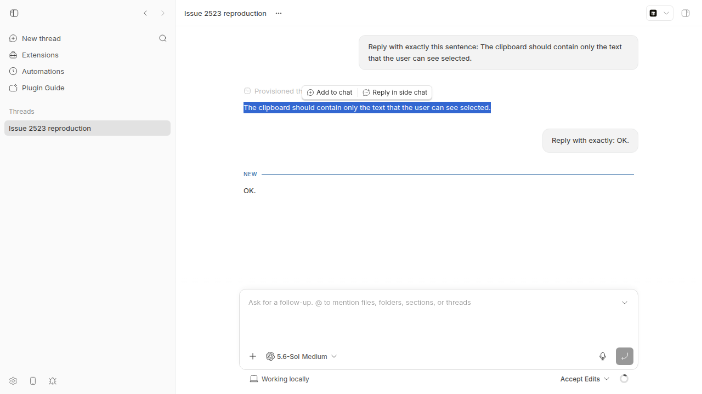
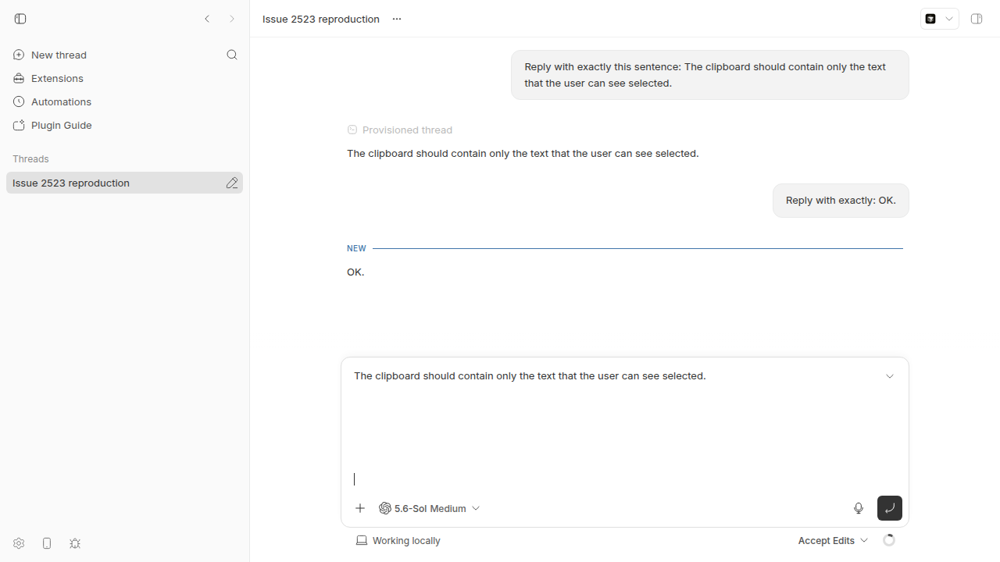

#2523 · Copying a chat text selection pastes invisible trailing newlines
Verdict: REPRODUCED · Root-cause confidence: high
1. TL;DR
Chromium can extend a visible assistant-text selection into the next timeline row.
The highlight shows only the sentence, but the native selection and clipboard contain six final newline characters.
The selection controller removes this whitespace only from its menu payload. It does not change the native browser range.
The composer keeps normal plain-text newline characters, so the paste increases its height from 22 to 155 pixels.
The submit path removes the final newline characters. Thus, the defect affects the draft but not the sent message.
2. Claims vs findings
| Claim from the issue | Status | Evidence |
|---|---|---|
| A visible sentence selection can paste extra blank lines. | Verified | The real app pasted six clipboard newline characters as seven editor breaks. |
| The native selection and clipboard contain seven newline characters. | Partly verified | This fixture produced six clipboard newline characters. The exact count changes with the range endpoint and DOM shape. |
| The provider does not affect the defect after the message exists. | Verified | Trusted browser copy and paste actions reproduced the defect without a provider request. |
| The defect occurs only in the draft. | Verified | The stored user row contained only the sentence after the test submitted the expanded draft. |
| Issue #1590 is not a duplicate. | Verified | Issue #1590 covers Clipboard API failure on an insecure remote origin. |
3. Environment
- bb 0.40.0 at
ad79bbb5ec909524f8f281e62d860c588a86f332. - Linux 7.0.0-30-generic on x86-64.
- The investigation shell used Node.js v24.18.0 with ABI 137.
- The isolated development server used Node.js v22.23.2 with ABI 127.
- Headless Chrome 152.0.0.0 through doobie 0.1.2.
- Codex CLI 0.150.1 created the fixture messages.
- App
localhost:11116, serverlocalhost:19116, and host daemon127.0.0.1:27116. - The launcher used a worktree-specific directory under
~/.bb-dev/.
4. Minimal reproduction
Use an isolated development instance and a thread with two completed turns.
scripts/bb-dev-app current
eval "$(scripts/bb-dev-app env)"
app_url=$(scripts/bb-dev-app status | sed -n 's/^App: //p')
spawn_json=$(node packages/scripts/dist/commands/run-cli.js thread spawn \
--project proj_personal \
--machine bee \
--provider codex \
--permission-mode accept-edits \
--title "Issue 2523 reproduction" \
--prompt "Reply with exactly this sentence: The clipboard should contain only the text that the user can see selected." \
--json)
thread_id=$(printf '%s' "$spawn_json" | jq -r '.id')
node packages/scripts/dist/commands/run-cli.js thread wait \
"$thread_id" --status idle --timeout 120
node packages/scripts/dist/commands/run-cli.js thread tell \
"$thread_id" "Reply with exactly: OK."
node packages/scripts/dist/commands/run-cli.js thread wait \
"$thread_id" --status idle --timeout 120
if test -f /home/sawyer/.bb/reports-work/issues/2523/repro/reproduce.js; then
cp /home/sawyer/.bb/reports-work/issues/2523/repro/reproduce.js \
reproduce-2523.js
else
curl -fsSL \
https://get-bb.github.io/reports/issues/2523/repro/reproduce.js \
-o reproduce-2523.js
fi
doobie --headless -b bb-report-2523 -e \
"const page = await browser.getPage('issue-2523-repro'); await page.goto('${app_url}/threads/${thread_id}'); page.url();"
doobie --headless -b bb-report-2523 run reproduce-2523.js
The first download path supports this workflow host. The public URL supports readers after publication.
Both paths create reproduce-2523.js in the checkout.
Source artifact: reproduce.js.
The base commit produced this output:
selection.trailingWhitespace: 6 clipboard.trailingWhitespace: 6 composer.beforeHeight: 22.09375 composer.height: 154.65625 submittedUserRow.text: "The clipboard should contain only the text that the user can see selected." submittedUserRow.trailingWhitespace: 0


Raw evidence: live-result.json and verification.txt.
5. Root cause
Chromium serializes block boundaries when a native range ends at the start of the next timeline row.
The code knows about this browser behavior. It accepts a whitespace-only boundary spill for the selection menu.
The controller calls trim() before it sends text to the menu.
See the selection read.
This operation does not change the native Range. The browser still owns the Ctrl+C result.
The shared event registry has no copy event listener.
See the registered event list.
The normal paste path reads text/plain and inserts the full value.
The plain-text normalizer changes only line-end format. It keeps final newline characters.
See the normalizer.
An existing test models the same whitespace spill but checks only the menu payload.
6. Proposed fix (first principles)
Add one shared copy listener beside the selection listeners.
Handle only a range with visible text in one message and whitespace outside that message.
Clip that spill during native serialization. Restore the original range after Chromium creates both clipboard formats.
Keep deliberate cross-message text, selected media, newer selections, and multiple ranges unchanged.
Do not trim all composer pastes. Users can intentionally paste final blank lines from other applications.
Add a DOM test for the copy payload. Add a real Chrome test for the final clipboard value.
This UI-only fix does not change a server or host-daemon wire contract.
7. PR review
PR #2556 · Fix copied chat selections with invisible trailing newlines
The PR changes two app files. It adds a shared copy listener and 187 lines of focused event tests.
The listener clips only a whitespace boundary spill. It restores the range in the next task if no newer selection exists.
| Review item | Finding |
|---|---|
| Root cause | The fix acts before Chromium serializes the native range. It does not change the paste path. |
| Selection safety | The code keeps cross-message text, selected media, multiple ranges, and newer selections. |
| Live Chromium result | The native selection kept six newlines. The clipboard had zero, and the composer stayed at 22.09375 pixels. |
| Tests | Direct Vitest passed 18 tests. Turbo typecheck passed three tasks. |
| Current main | git merge-tree --write-tree completed without conflicts against 3d57259ab032301d08c1cd9a7e3562f659ac1b3e. |
| CI | All app tests passed. Linux Package Smoke failed when the AppImage exited with SIGTRAP. |
The failing smoke check is outside the two-file UI change. The matching macOS package smoke check passed.
Verdict: MERGE AFTER CI RERUN. The fix removes the defect and preserves the important selection cases.
8. Related issues
- #1590 covers copy failures on insecure remote origins. It has a different cause.
- PR #274 documented Chromium’s whitespace-only boundary spill for triple-click selection.
9. Appendix
Checks
pnpm install --frozen-lockfile --prefer-offline --package-import-method=copycompleted.pnpm exec turbo run buildpassed 18 tasks.- Three direct Vitest files passed 127 tests.
- The Turbo test gate stopped in native-module setup with signal 139 before Vitest started.
- The revised browser script reproduced the selection, clipboard, composer, and stored user row.
- PR #2556 removed the clipboard spill in the same live Chromium test.
- PR #2556 merges without conflicts against
origin/mainat3d57259ab032301d08c1cd9a7e3562f659ac1b3e.
Commands
gh issue view 2523 --comments gh issue view 2523 --json number,title,body,comments,labels,projectItems,url pnpm install --frozen-lockfile --prefer-offline --package-import-method=copy pnpm exec turbo run build scripts/bb-dev-app current node packages/scripts/dist/commands/run-cli.js thread spawn ... node packages/scripts/dist/commands/run-cli.js thread tell ... doobie --headless -b bb-report-2523 ... pnpm exec turbo run test --filter=@bb/app -- ... pnpm exec vitest run ... pnpm exec turbo run typecheck --filter=@bb/app gh pr view 2556 ... git fetch origin pull/2556/head:refs/remotes/origin/pr-2556 git diff "$(git merge-base origin/main origin/pr-2556)"..origin/pr-2556 -- ... git merge-tree --write-tree origin/main origin/pr-2556 git blame ... git log ad79bbb5ec90..origin/main -- ...
Verification
The verifier ran the original commands twice. The JSON capture and script path failed.
This revision uses the built CLI for clean JSON. It downloads the script to a local file.
The revised script now submits the draft and reads the new user row from the server timeline.
The revision also reviews PR #2556, its diff, tests, current checks, live fix, and main compatibility.